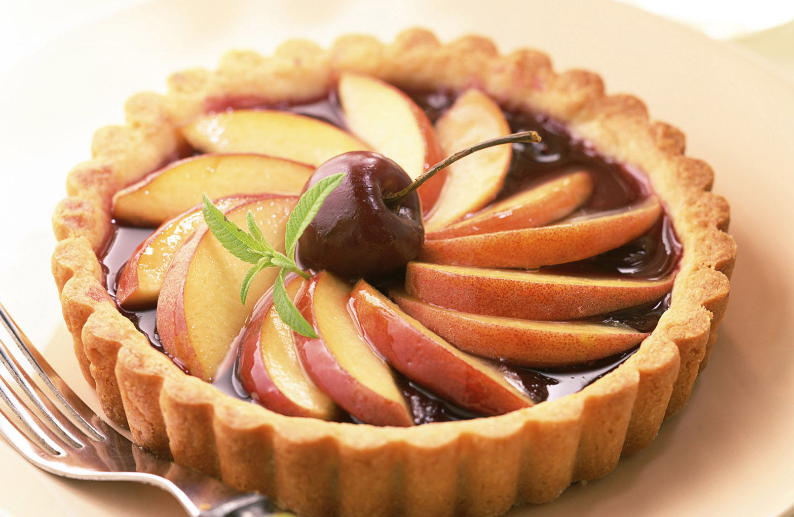
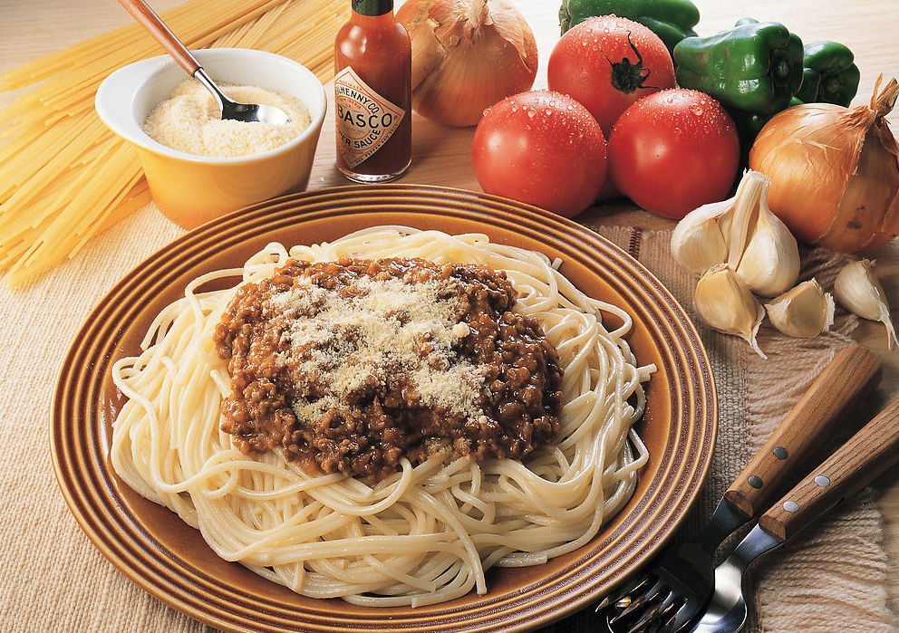
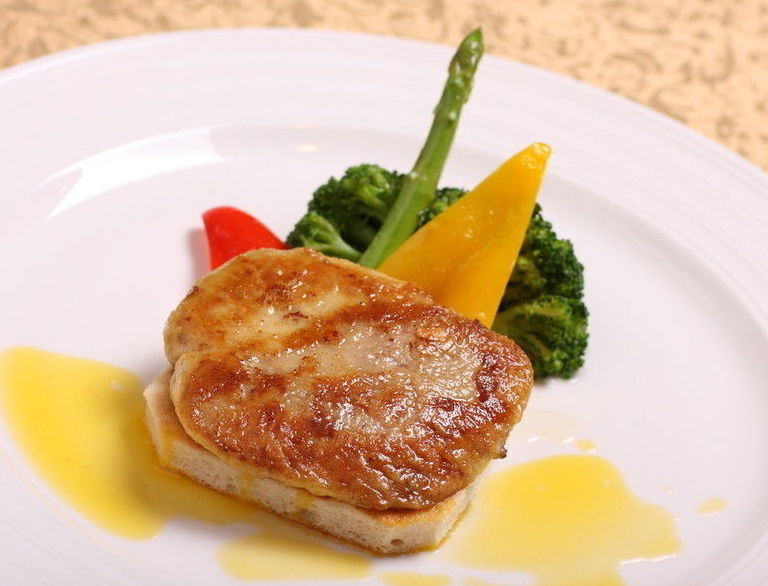
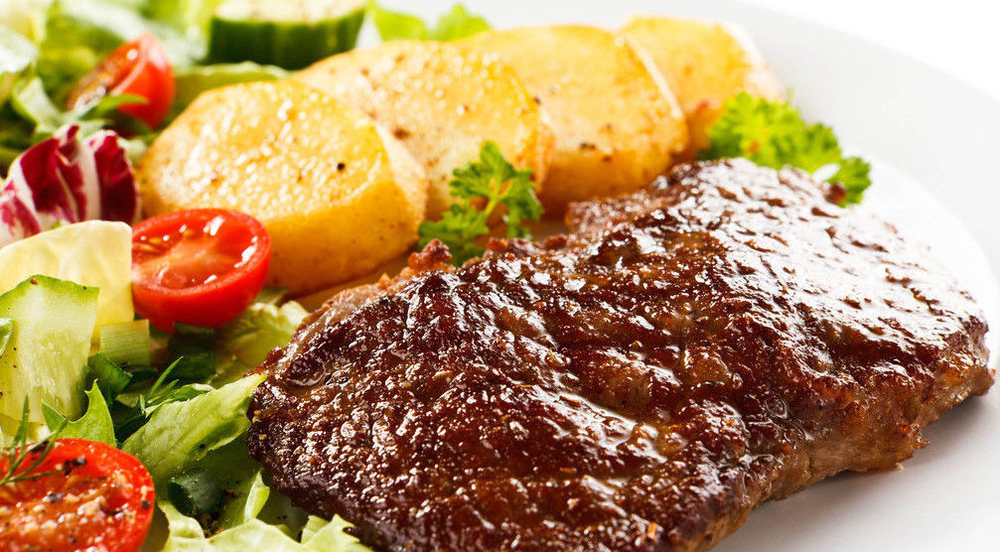

Culinary Art |
Culinary Art |
|  |  |
| Apple Pie | Pasta |
| Apple pie is simple, convenient, and inexpensive. It's a common dessert in American life. It's a representative of American food. | Pasta, also known as spaghetti. It's the closest meal in western cuisine to Chinese eating habits. There are many kinds of spaghetti. Each has its own name. |
|  |  |
| Pan-Fried Goose Liver | Steak |
| A French dish made with foie gras as its main ingredient. It is nutritious. | Steak is one of the most common foods in Western food. The main method of cooking is frying and roasting. |